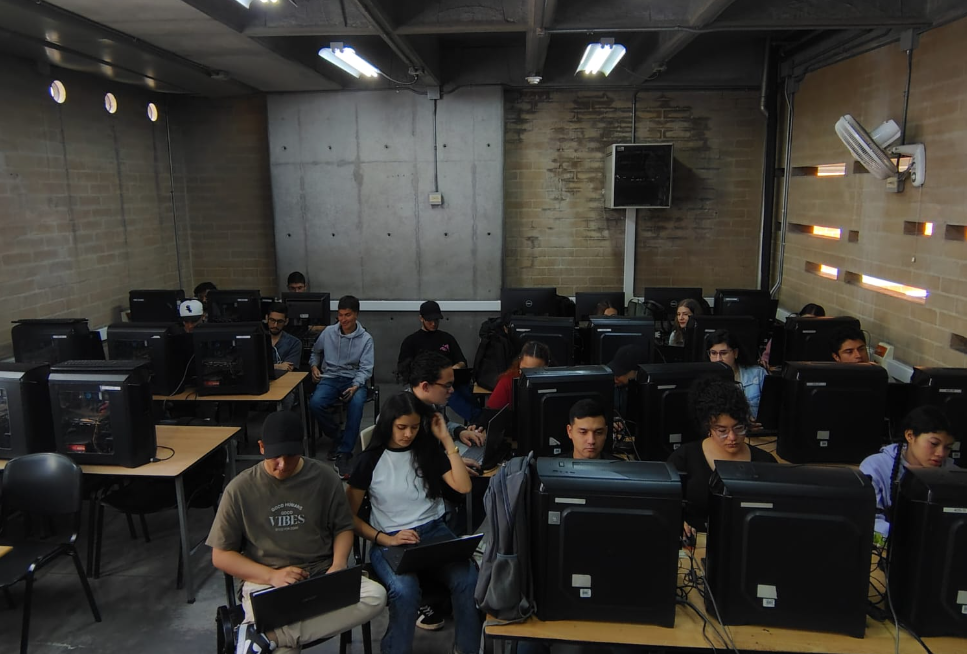
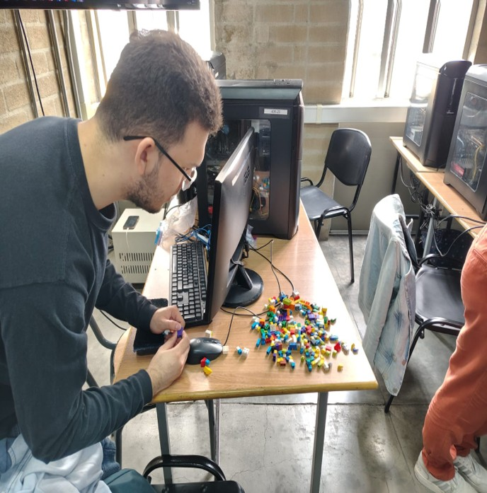
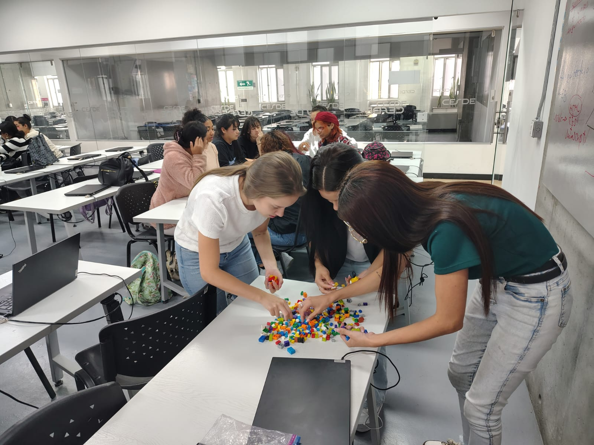
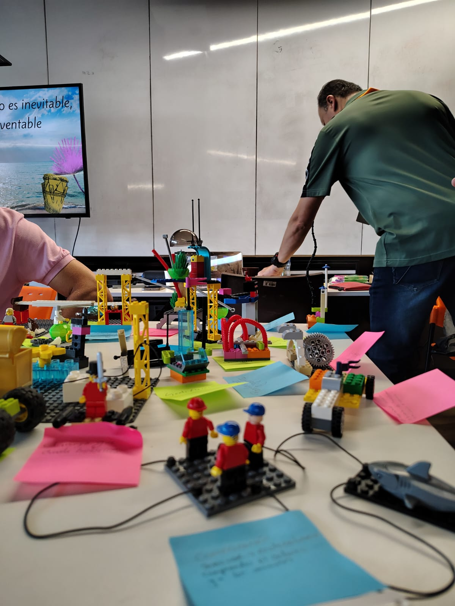

Un programa orientado a la creación de aplicaciones web y móviles reales, con las herramientas, metodologías y lenguajes que requiere el sector productivo — y una experiencia dual junto a Globant.
Formación en aula con acompañamiento docente directo y prácticas en los laboratorios del CESDE.
Aprendizaje flexible mediado por tecnología, ideal para quienes requieren compatibilizar estudio y trabajo.
Integra la formación académica con la experiencia en la empresa, junto al aliado tecnológico Globant.
El egresado desarrolla las capacidades para crear aplicaciones web y móviles usando herramientas, metodologías y lenguajes requeridos en el sector productivo, demostrando respeto, orden y creatividad.
Construcción de aplicaciones web y móviles funcionales desde los primeros niveles del programa.
Dominio de ambos lados del desarrollo: lógica del servidor, bases de datos e interfaces de usuario.
Trabajo en equipo como en la industria, con marcos ágiles y entregas iterativas.
Cátedra Ser Emprendedor, liderazgo y habilidades para la vida que fortalecen el perfil profesional.
Una ruta progresiva: inicia con los fundamentos y culmina con la construcción de proyectos completos usando las tecnologías más actuales.
La modalidad dual integra a la empresa dentro del proceso formativo: lo aprendido en el aula se conecta con retos reales acompañados por una compañía líder en tecnología.
El estudiante adquiere los fundamentos técnicos y las habilidades blandas en el aula.
La empresa se integra al proceso con proyectos, mentoría y experiencias de la industria.
El estudiante aplica lo aprendido construyendo un producto digital en equipo.
El egresado finaliza con experiencia práctica y un portafolio que respalda su trabajo.
El modelo dual acerca el mundo real al estudiante: metodologías ágiles, trabajo colaborativo y estándares profesionales acompañados por uno de los referentes globales del desarrollo de software.
La construcción de proyectos integradores en programas de formación TIC no solo articula saberes técnicos, sino que promueve la motivación, el pensamiento lógico y el desarrollo de competencias socioemocionales como la colaboración y la comunicación. Integrar desafíos reales favorece una formación contextualizada, vinculada al entorno productivo y a la identidad profesional.
Acompañados de metodologías activas y TIC, los proyectos integradores propician una enseñanza significativa, permitiendo que el estudiante sea protagonista en la resolución de problemas auténticos.
Las etapas de ideación y cocreación son momentos clave donde se construyen conceptos, se exploran soluciones y se fomenta la creatividad colectiva. Las metodologías activas permiten que los estudiantes asuman un rol protagónico, desarrollando pensamiento crítico, empatía y habilidades de comunicación.
El estudiante es protagonista en la resolución de problemas auténticos: la ideación y la cocreación convierten el aprendizaje en una experiencia significativa.




El proyecto integrador es la prueba viva del modelo: estudiantes organizados en equipos especializados construyen una plataforma completa, tal como ocurre en una empresa real.
Una solución para fomentar la salud mental en entornos accesibles, seguros y colaborativos: registro personalizado, perfiles profesionales, gestión de eventos, mensajería y paneles estadísticos.
Ver el proyecto en vivo →